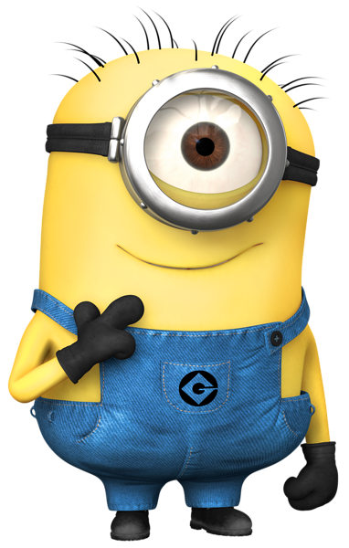
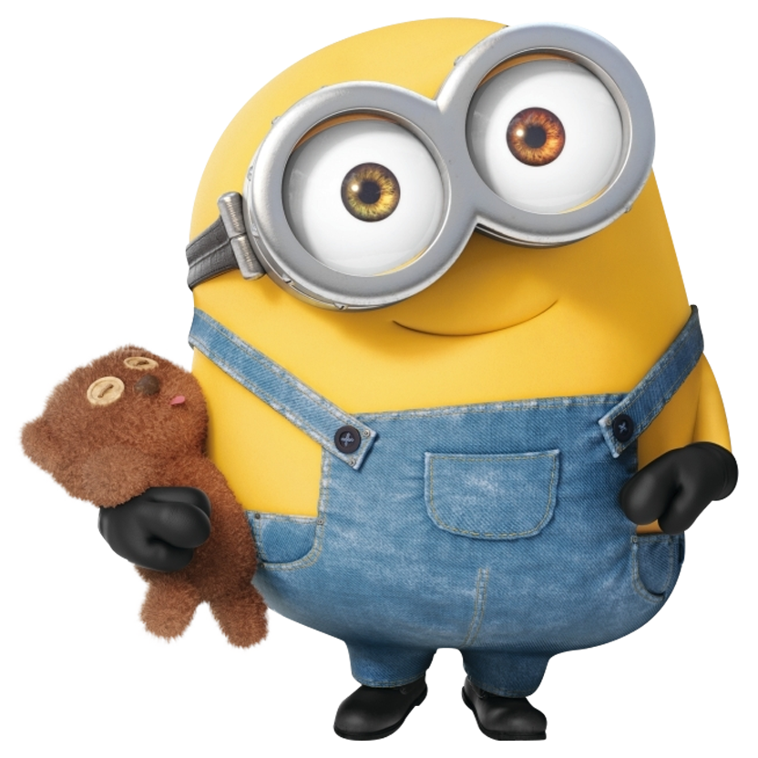

Выбери своего миньона


Миньоны – маленькие желтые создания, общающиеся на своем особом языке, напоминающем бормотание. Суть их жизни состоит в том, чтобы служить самому отвратительному злодею, которого они только смогут найти. Они существовали еще на заре формирования жизни, начиная с одноклеточных организмов и заканчивая своим современным видом, сформировавшемся в эпоху динозавров. Их любимая еда – бананы, на втором месте яблоки и папайя. У них может быть 1 или 2 глаза и всего 5 разновидностей причесок. Давайте окунемся глубже в историю создания этих удивительных персонажей и узнаем несколько любопытных фактов:
- Известно, что при создании миньонов, авторы вдохновлялись существами из звездных войн – «Джава» и «Умпа Лумпа» из фильма «Чарли и шоколадная фабрика».
- Они создавались с целью уравновесить Грю, чтобы он не казался слишком страшным злодеем. Кажется, они перевыполнили свою задачу.
- Изначально планировалось, что миньоны будут выглядеть полностью как люди, но из-за нехватки бюджета их пришлось сильно уменьшить и концепция поменялась.
- По словам одного из режиссеров фильма, Пьера Коффина, количество миньонов ровняется 899 и не меняется.
Несмотря на это, у них всего 5 вариантов причесок, включая отсутствие волос у Боба.
- У миньона Боба — гетерохромия. Различный цвет радужной оболочки глаз. Встречается как у людей, так и у животных, говорит о неоднородной концентрации и распределении меланина в оболочке глаз.
- В 2015 году миньоны стали официальным талисманом студии Universal.
- Язык миньонов включает в себя слова из Английского, Французского, Испанского, Итальянского, Корейского, Индийского, Японского и некоторых других языков.
- У миньонов есть свой атракцион, в парке развлечения студии Universall, в Голливуде. Там Вы сможете пройти подготовку и стать настоящим миньоном.
- Миньоны собрали в прокате почти 1,2 миллиарда долларов, установив при этом несколько мировых рекордов.
- Так же они попали в лонг лист, из 16 мультфильмов из которых будут отобраны 5 претендентов на премию Оскар.
Как мы видим, эти герои тщательно прорабатывались. Неудивительно, что они вызывают к себе такой неподдельный интерес. Если Вы хотите узнать больше любопытных фактов о миньонах, можете зайти сюда.
Теперь, Вы знаете больше о том, кто такие миньоны, но, скорее всего, Вас продолжает мучить вопрос, почему они настолько популярны.
Основными чертами, за которые мы любим миньонов, являются, безусловно, юмор, легкое отношение к жизни, детская наивность и очень милый внешний вид. Эти персонажи завоевали сердца миллионов взрослых и детей почти во всех странах мира. Они гарантировано поднимают настроение и никому не дадут заскучать.
Миньоны из «Гадкий Я» — это лучшие друзья для детишек. Малыши не хотят выпускать ярко-желтые мягкие игрушки из рук, отправляясь с ними в постель. А по мотивам мультфильма «Миньоны» вышло много детской печатной продукции, такой как, раскраски, книжки с наклейками, альбомы для аппликации и многое другое. Магазины все активней наполняются продукцией с изображением этих персонажей, а мы, в свою очередь, с большим нетерпением ждем выхода очередной части гадкого я, чтобы снова встретиться с любимыми героями на большом экране. Вопрос только в том, как теперь продержаться до лета 2017 года, когда на экранах появится третья часть «Гадкий Я»?
© minions.com